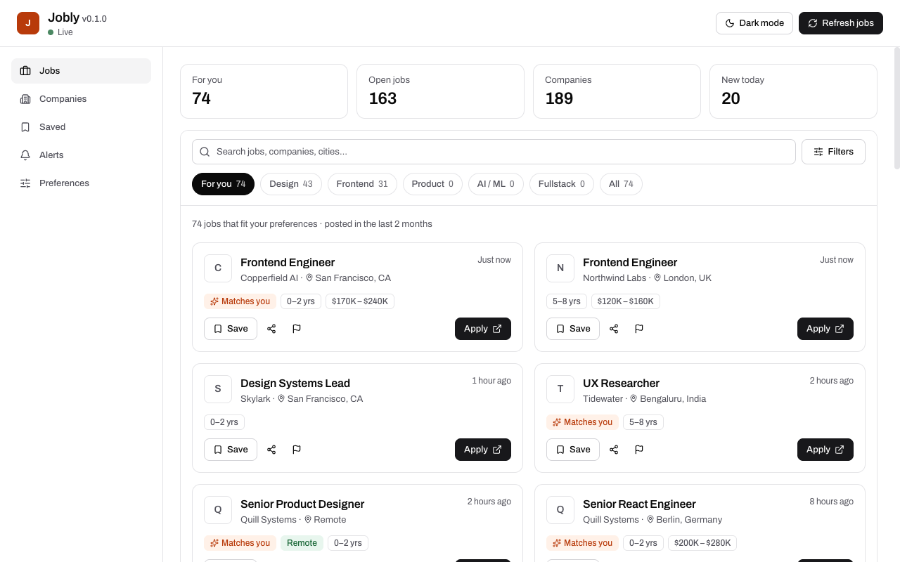
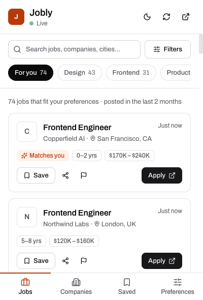

Find jobs.
Apply smarter.
Stop checking dozens of career pages. Jobly reads hundreds of company job boards and keeps the fresh, relevant roles in one calm list, all within the last two months.
Free, no account, no tracking. Works with Chrome and other Chromium browsers.


Everything you need, nothing you don't
Jobly keeps the list short, fresh and easy to read.
Only fresh jobs
Anything posted more than two months ago is never shown. Filter further by date: past 24 hours, week, or month.
Matched to you
Pick the roles, experience level and keywords you care about. "For you" shows just those.
Hundreds of companies
Jobs come straight from company career pages (Greenhouse, Lever, Ashby and more), so every Apply button goes to the real application.
Calm and simple
One clean list. Search, filter, save a job, hide a company. Light and dark themes, keyboard friendly.
Optional alerts
One desktop notification when new jobs match you. Turn it off any time.
Private by design
No account and no analytics. Your preferences and saved jobs stay on your device. Read the privacy policy.
Up and running in a minute
Install
Add Jobly to Chrome and pin it to your toolbar.
Tell us what you want
A short welcome tour asks for your roles, experience and whether you want alerts.
Browse and apply
Open the popup for a quick look, or the full dashboard for more room. Apply on the company's own site.
Questions
Is Jobly really free?
Yes. There are no ads, no subscription and no account.
How fresh are the jobs?
Jobly checks the sources every couple of hours. Jobs older than two months are hidden, and you can narrow it to the past 24 hours, 3 days, week, 2 weeks or month.
Which companies are covered?
Several hundred technology employers, plus remote-job feeds. You can hide any company you are not interested in.
Does Jobly collect my data?
No account and no analytics. Your preferences and saved jobs are stored on your device. The full details are in the privacy policy.
The first load is slow. Why?
Jobly runs on a free server that goes to sleep when idle, so the first open can take up to half a minute. The extension shows your last results while it wakes up.